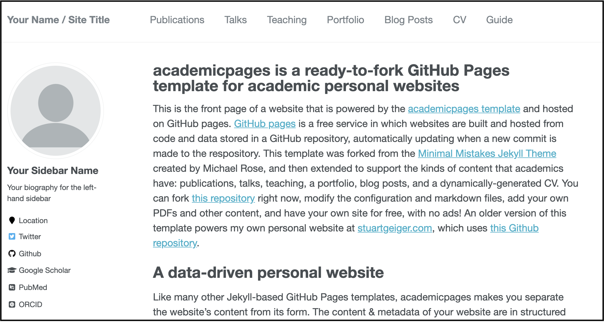
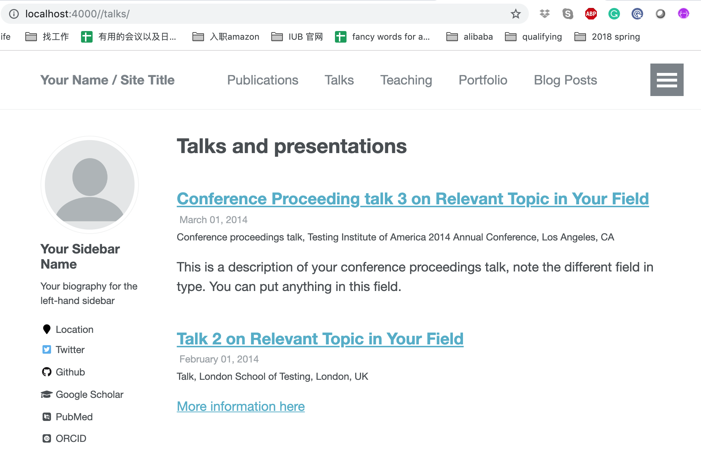
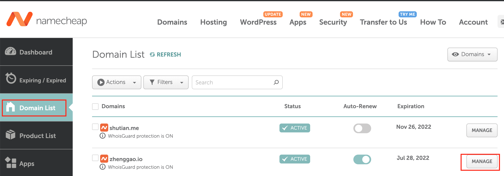
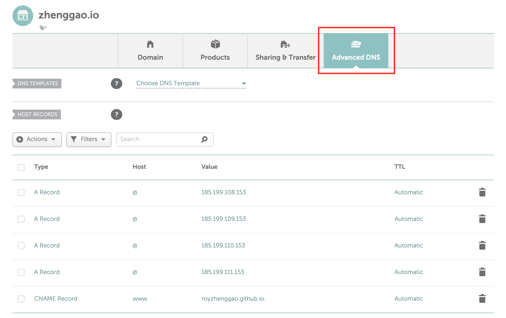
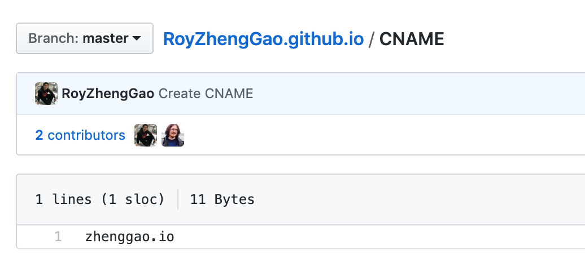
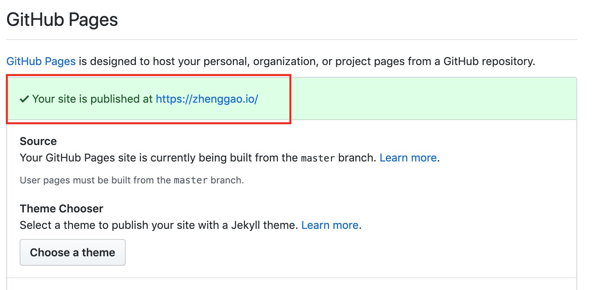

Github Pages 允许免费托管由Jekyll生成的静态网页博客，我们可以用来制作自己的个人网站。本文我们介绍一个基于Jekyll的比较好看的个人网站模板，叫做academicpages。 其源代码 和生成的网页效果比较适用于偏学术风格的个人网站。
本地测试
(1) 直接下载源代码到本地并解压。terminal 中把当前路径设到解压后的根目录下面。
(2) 本文默认的安装机器是Mac，并且Homebrew 已经提前安装好。此外，我们需要安装ruby, bundler 和 nodejs，安装命令如下：
1 | brew install ruby // ruby其实应该默认已经安装在Mac系统上了，以防万一可以再用brew 安装下 |
(3) 当前目录下运行 bundle clean 先整理下载下来的project。
(4) 当前目录下运行 bundle install 来安装对应的依赖文件。如果出现错误请删除文件夹中的Gemfile.lock 然后重试。
(5) 当前目录下运行 bundle exec jekyll liveserve 来生成静态html文件并部署到本地服务器上。运行成功的话 localhost:4000 进行访问。退出时按 ctrl + c。所展示页面如图：

修改网站内容
Side bar 板块
网站主页左边的side bar 内容，可以通过修改根目录下面_config.yml来完成。主要修改“Site Settings” 和 “Site Author” 两个部分。
(1) 在“Site Settings” 部分，url 对应的是要部署的主机名称hostname。如果是本地测试，要改为http://localhost:4000/ 。否则为对应的github.io的名字https://academicpages.github.io 。
1 | # Site Settings |
(2) 在“Site Author”部分，头像照片需要存放在images/ 文件夹下面。_config.yml中只需要直接填写照片的文件名profile.png即可:
1 | author: |
Navigation 板块
网站主页上方的导航栏的内容，可以通过修改 data/navigation.yml里面内容完成。具体内容如下所示：
1 | main: |
如果一些板块不需要的话，可以用“#” 注释掉或者直接移除。
修改各个板块内容
大部分的板块内容存放在其对应的文件夹中。比如对于talks来说，其里面的所有内容都存放在 _talks/ 文件夹中。每个具体的talk内容都存放成单独的Markdown 文件。而控制这些板块的文件放在 _pages/ 文件夹中，以或者Markdown 或者html 的格式存在。比如talks.html 控制着 hostname/talk/ 这个页面来显示对应的所有talks的信息，如图所示：

点击每个talk的链接可以进入具体的talk 内容，由_talks/ 文件夹下的Markdown 控制。
每个Markdown 文件的开头都是一些Yaml 格式的metadata。比如下图中 permalink 代表的是对应内容的链接是 hostname/talks/2012-03-01-talk-1:
1 | --- |
所有的文件比如PDF或者zip类型的文件，都可以存放在 files/ 文件夹下面. 如果引用的话，对于example.pdf这个文件来说，其对应的链接在https://[your GitHub username].github.io/files/example.pdf。
此外，_pages/ 文件夹下的about.md 中的内容是个人网站的首页内容。404.md 页面内容是当网址不存在的时候会跳转到的页面。cv.md 是直接的resume 页面:
1 | --- |
文件的开头同样是一些定义的Yaml格式的metadata。 redirect_from 代表其他指定页面也会跳转到当前页面。在这个例子中，hostname/cv 和 hostname/resume都会指向同一页面。
DIY所有内容放在同一页面
有些时候，我们会发现个人网站的内容不够丰富，不足以让每个版块都有足够的信息展示。此时，我们可以考虑把所有内容放到一个页面下，点击navigation section的时候，跳转只会跳转当前页面上对应的的section 中。实现的页面效果在 https://zhenggao.io/ 可以体现。
(1) 修改data/navigation.yml里面内容如下，对应的url 都是在主页面上面有着对应id 的section：
1 | main: |
(2) 由于主页面是about.md，所以我们所有的内容都放在这个页面里面。在想要跳转的部分，加上对应的id，比如：
1 | <h2 id="research"> Research</h2> |
这时点击navigation bar 上面的Research部分，我们就会跳转到主页面的这个Rearch 标题部分。
部署到Github Pages
(1) 在Github上新建一个仓库，仓库名为RoyZhengGao.github.io（这个仓库的名称必须严格按照 username.github.io 的格式来命名）。
(2) 把所有的网站代码上传到对应仓库中去：
1 | git init |
(3) 打开http://RoyZhengGao.github.io (对应自己的 http://username.github.io )来测试网站是否部署成功。通常第一次创建Github Pages站点需要5-10分钟的时间。
购买并绑定域名
(1) 我们这里以在Namecheap 网站购买域名为例。首先注册Namecheap个人账号来购买喜欢的域名。
(2) 在side bar 中选择 “Domain List”。找到需要链接的域名并点击其旁边的“Manage”按钮，如下图所示：

(3) 点击“Advanced DNS”按钮进入。点击“Add New Record”来添加以下信息：
1 | - A record for @ pointing to 185.199.108.153 |
如果有其他多余的记录，需要删除。最后的页面如下：

(4) 点击“Save All Changes” 按钮进行保存。
(5) 在Github中建立的username.github.io的repository中找到CNAME文件（如果不存在，请手动建立一个）。在文件中加上对应绑定的域名，如下图所示：

此时点击repository 中的“Settings” 按钮，查看Github Pages是否被重定向到绑定的域名中。下图表示已经成功绑定：

最后，至少需要三十分钟的部署时间。之后就可以访问绑定的域名了！
参考文献: